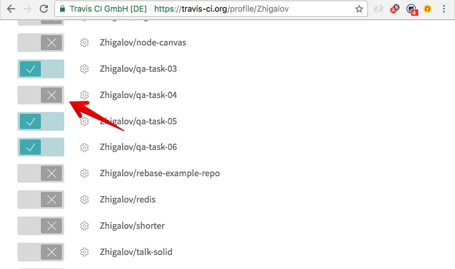
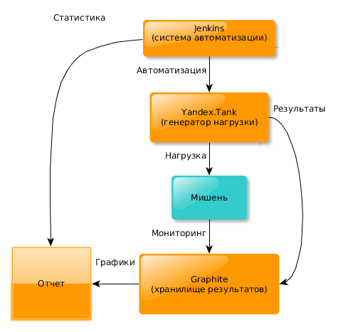
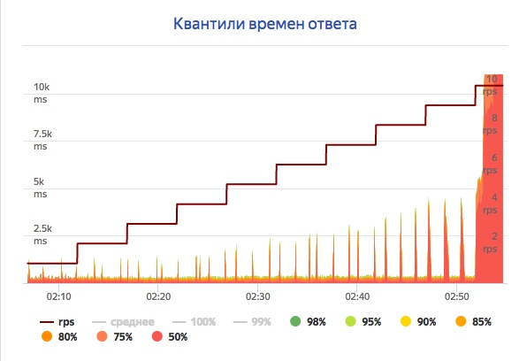
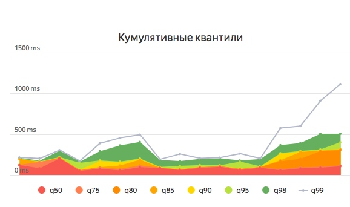
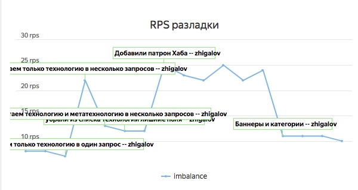

Tools
ESlint. Code coverage. Load testing. Continuous integration
Code quality tools
- Обнаружить ошибки до интерпретации кода
- Привести код к общему стилю
- Убрать лишний код
ESlint
The pluggable linting utility for JavaScript and JSX
Линтинг Кодстайл
var firstName="Sergey", secondName;
let params ={
language: 'JavaScript', testable:true,
version: 'ES2016'
};
Линтинг Ошибки
function getPokerHand(dice) {
if (Array.isArray(dice))
console.log('Dise is', typeof dice);
throw new Error('Dice is not array');
return 'Покер';
}

Линтинг Неиспользуемые переменные
/**
* Represents a sum
*
* @param a The first number.
* @param {number} b
*/
function sum(a, b) {
return a + c;
}
ESlint Установка
# Установка eslint
npm install eslint --save-dev
# Установка парсера JavaScript для ESNext
npm install babel-eslint --save-dev
ESlint Конфигурация
// .eslintrc.json
{
"env": {
"es6": true,
"node": true
},
"parser": "babel-eslint",
"rules": { /* ... */}
}
./node_modules/.bin/eslint --init
ESlint Пресеты
eslint-config-airbnbeslint-config-googleeslint-config-idiomaticeslint-config-jquery...
ESlint Запуск
./node_modules/.bin/eslint .
ESlint --fix
До
var firstName="Sergey", secondName;
let params ={
language: 'JavaScript', testable:true,
version: 'ES2016'
};
ESlint --fix
После
let firstName = 'Sergey',
secondName;
const params = {
language: 'JavaScript', testable: true,
version: 'ES2016'
};
Code coverage
istanbul
# Установка istanbul
npm install istanbul --save-dev
# Запуск istanbul
./node_modules/.bin/istanbul cover
./node_modules/.bin/_mocha
qa-task-03/tests
# Открываем отчет с результатом coverage
open coverage/lcov-report/index.html
istanbul Отчет
./node_modules/.bin/istanbul cover ...
====== Coverage summary =======
Statements : 95.24% ( 20/21 )
Branches : 93.75% ( 15/16 )
Functions : 100% ( 3/3 )
Lines : 95.24% ( 20/21 )
===============================
istanbul 100%
Высокий ковередж не означает хорошее покрытие тестами
Пример
function playPoker(firstDice, secondDice) {
const first = getPokerHand(firstDice);
const second = getPokerHand(secondDice);
const compareHands =
pokerHands.indexOf(first) -
pokerHands.indexOf(second);
return compareHands === 0
? 'Ничья'
: compareHands > 0 ? 'Первый' : 'Второй';
}
Тесты
describe('playPoker', () => {
it('should return `Ничья` for equal poker hand', () => {
const actual = playPoker([1, 1, 2, 3, 4], [1, 1, 2, 3, 5]);
assert.equal(actual, 'Ничья');
});
it('should return `Первый` when first hand great then second', () => {
const actual = playPoker([1, 1, 1, 1, 4], [1, 1, 1, 3, 4]);
assert.equal(actual, 'Первый');
});
/* ... */
});
unit-coverage
# Устанавливаем unit-coverage
npm install --save-dev unit-coverage
# Запускаем ковередж
node_modules/.bin/unit-coverage run
-s 'qa-task-03/src/**'
-t 'qa-task-03/tests/**'
-S relative
-O sources=qa-task-03/src
-O tests=qa-task-03/tests
-- --recursive qa-task-03/tests/
Continuous Integration
CI - это практика разработки программного обеспечения, которая заключается в слиянии рабочих копий в общую ветвь разработки несколько раз в день и выполнении частых автоматизированных сборок проекта
Continuous Integration Этапы
- Клонирование репозитория
- Установка зависимостей, сборка
- Запуск всех видов тестов
- Сбор метрик
- Уведомление ответственных
Continuous Integration Плюсы
Проще интегрировать задачу
Дает быструю обратную связь
Дисциплинирует команду
Тесты работают
Continuous Integration Сервер


Continuous Integration TravisCI
- Зарегистрироваться на travis-ci.org
- Активировать репозиторий
- Добавить
.travis.yml
Continuous Integration Активировать
Continuous Integration .travis.yml
language: node_js
node_js:
- "node"
script:
- npm run cover
Нагрузочное тестирование
(англ. load testing) — подвид тестирования производительности, сбор показателей и определение производительности и времени отклика программы в ответ на внешний запрос с целью установления соответствия требованиям, предъявляемым к программе
Яндекс.Танк
— это инструмент для нагрузочного тестирования и анализа производительности веб-сервисов и приложений.
Общая схема
Танковая терминология Танкист
человек, который проводит нагрузочное тестирование
Танковая терминология Танк
сервер, с которого отправляются http-запросы.
Танковая терминология Мишень
приложение на одном или нескольких серверах, которое обслуживает запросы пользователей.
Танковая терминология Патрон
запрос от нагрузочного сервера к приложению.
«Танкисты» заряжают «ленты» с «патронами» и «стреляют» по «мишеням» из «танков» на «полигоне».
Одна стрельба
Профили нагрузки
- Константная
- Утечки памяти
- Время ответа сервиса
- До разладки
- Максимальный RPS
Серия стрельб Константая
Серия стрельб До разладки
SLA
(англ. Service Level Agreement) — договор между заказчиком и поставщиком, содержащий <...> согласованный уровень качества предоставления данной услуги.
SLA Пример
95% пользователей получат ответ не позже чем через 300ms
Метрики производительности
- Время выполнения запроса
- Потребление ресурсов центрального процессора
- Потребление оперативной памяти
- Потребление сетевых ресурсов
- Работа с дисковой подсистемой